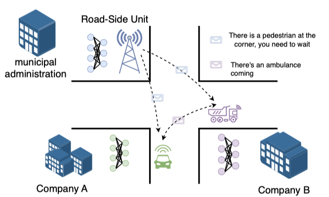

Researcher in autonomous driving, cooperative perception, and AI agents.
Ph.D. · Umeå University · Intelligent Autonomous Systems
Email
hello [at] example [dot] edu
Based
Stockholm / Remote
Brief Bio
I completed my Ph.D. at Umeå University as a member of the
Cooperative and Intelligent Embedded Systems
research group. My doctoral work focused on robust, efficient, and scalable cooperative
perception systems for autonomous vehicles.
Research interests: autonomous driving; cooperative perception; 3D
perception; and vision-language-action models for autonomous vehicles.
I am also deeply interested in AI agents and explore agent design through personal
projects, including Refora.
Selected Project
Refora
An AI research agent for literature discovery and synthesis
A workspace-aware research agent working across papers, notes, and connected evidence.
Refora is my personal AI research agent project for turning collections of papers into
an active research environment. Instead of treating AI as a separate chat window, it
grounds the agent in the user's literature library and visual workspace, allowing it to
work directly with selected papers, notes, files, and the relationships between them.
Within a workspace, the agent can inspect context, search papers and conversations,
retrieve summaries or full text, compare methods, trace citations, discover related
literature, and synthesize the collected evidence into structured research reports. Its
progress and retrieved materials remain visible beside a canvas where research content
can be arranged and connected.
Context-aware agent: reasons across the active research workspace.
Evidence synthesis: compares papers and produces structured reports.
Literature discovery: explores citations and related research.
Visual workspace: connects papers, notes, files, and agent outputs.
Publications

Cooperative Perception for Next-Generation Autonomous Vehicles
Junjie Wang
Doctoral dissertation, Umeå University, 2026
Develops unified cooperative perception frameworks for realistic multi-agent
systems, addressing model heterogeneity, temporal latency, and limited communication
bandwidth.
Communication Efficient Cooperative Perception via Codebook-Free Vector Quantization
Junjie Wang, Zeyu Gao, Tomas Nordström
IEEE Access, 2026
A lightweight codebook-free quantization framework that compresses shared BEV
features into low-bit integer codes while retaining competitive detection accuracy.
An Online Semi-Supervised P300 Speller Based on Extreme Learning Machine
Junjie Wang, Zhenghui Gu, Zhuliang Yu, Yuanqing Li
Neurocomputing, volume 269, pages 148–151, 2017
An online self-training P300 speller that uses a regularized weighted sequential
extreme learning machine to reduce calibration time and computational cost while
maintaining spelling accuracy.